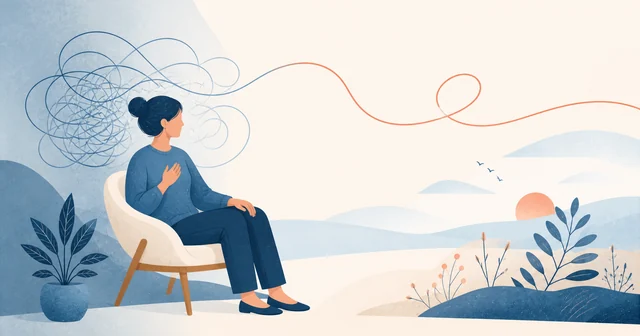
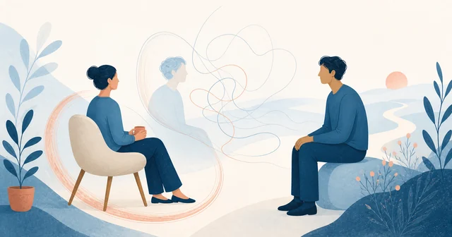
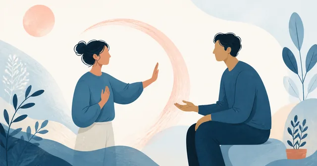
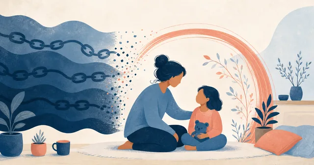
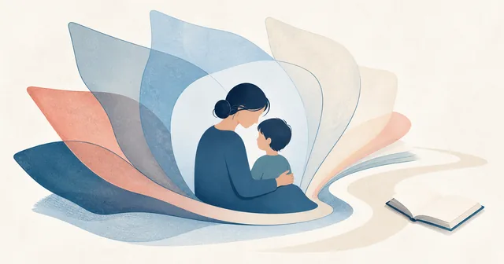
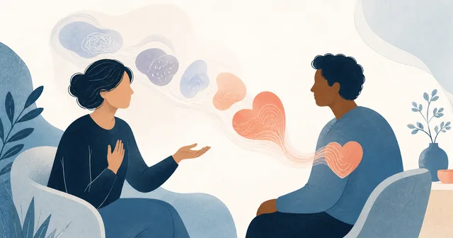
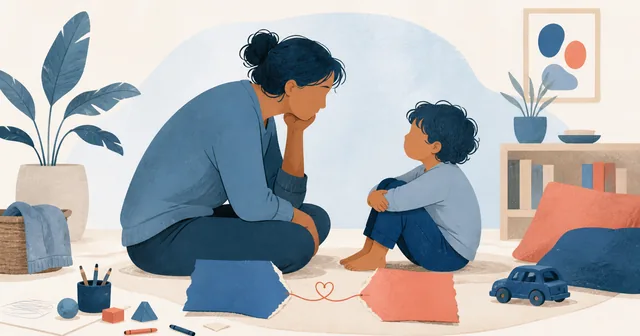
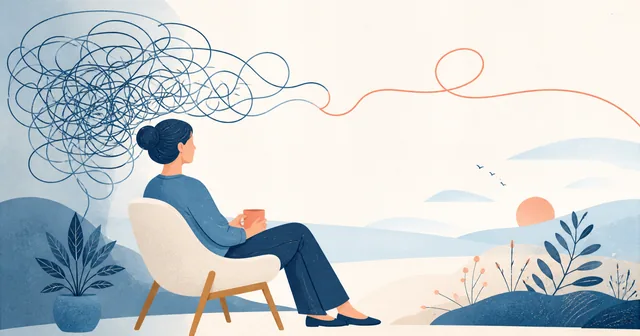
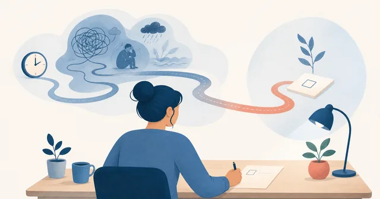
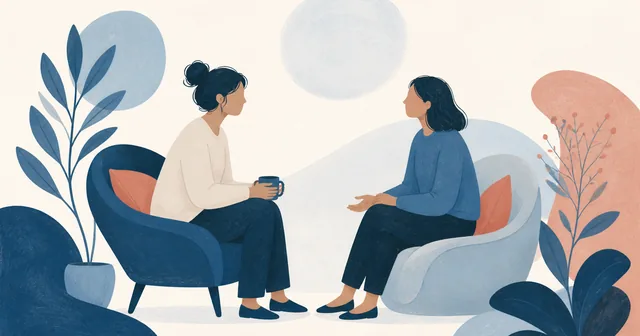

Úzkost a duševní zdravíPanická ataka: projevy, co dělat a kdy vyhledat pomoc
Jak panickou ataku rozpoznat, co může pomoci v danou chvíli a kdy není vhodné automaticky předpokládat, že jde jen o paniku.
Číst více →
Sdílím s vámi poznatky z psychologie, terapie a osobního růstu.
Články o tématech, která rezonují s každodenním životem.

Úzkost a duševní zdravíJak panickou ataku rozpoznat, co může pomoci v danou chvíli a kdy není vhodné automaticky předpokládat, že jde jen o paniku.
Číst více →
Vztahy a osobní rozvojJak rozlišit narcistické rysy, diagnózu a manipulativní chování a proč je užitečnější sledovat opakující se vztahové vzorce.
Číst více →
Vztahy a osobní rozvojProč je tak těžké říct „ne“, jak poznat oslabené osobní hranice a jak je nastavovat s respektem k sobě i druhým.
Číst více →
RodičovstvíBojíte se, že přenesete vlastní traumata na své dítě? Zjistěte, jak podle psychologů a psychoterapeutů zvládat náročné situace jinak a vytvořit laskavější prostředí pro své děti.
Číst více →
RodičovstvíRodiče jsou dnes vystaveni stovkám zdrojů rad. Zjistěte, které rady jsou mýty a jak na ně pohlíží nejnovější psychologické poznatky. Od fyzických trestů po obrazovky.
Číst více →
Osobní rozvojVěděli jste, že náš úspěch v životě nezávisí pouze na IQ, ale také na naší schopnosti pracovat s emocemi? Zjistěte více o emoční inteligenci a jak ji rozvíjet.
Číst více →
RodičovstvíPtáte se, jestli jste dobrý rodič? To, že si to vůbec kladete, může být ten nejjasnější důkaz, že to děláte dobře.
Číst více →
Osobní rozvojNeustále přemýšlíte a analyzujete? Zjistěte, proč vzniká overthinking, jaké má signály a co s ním můžete dělat. Praktické rady od psycholožky.
Číst více →
Osobní rozvojProkrastinace není lenost. Zjistěte psychologické důvody odkládání a praktické rady, jak to změnit.
Číst více →
ZdravíTrápí někoho z vašich blízkých mentální anorexie, bulimie nebo psychogenní přejídání? Zjistěte, jak jim můžete pomoci a jaké formy podpory existují.
Číst více →